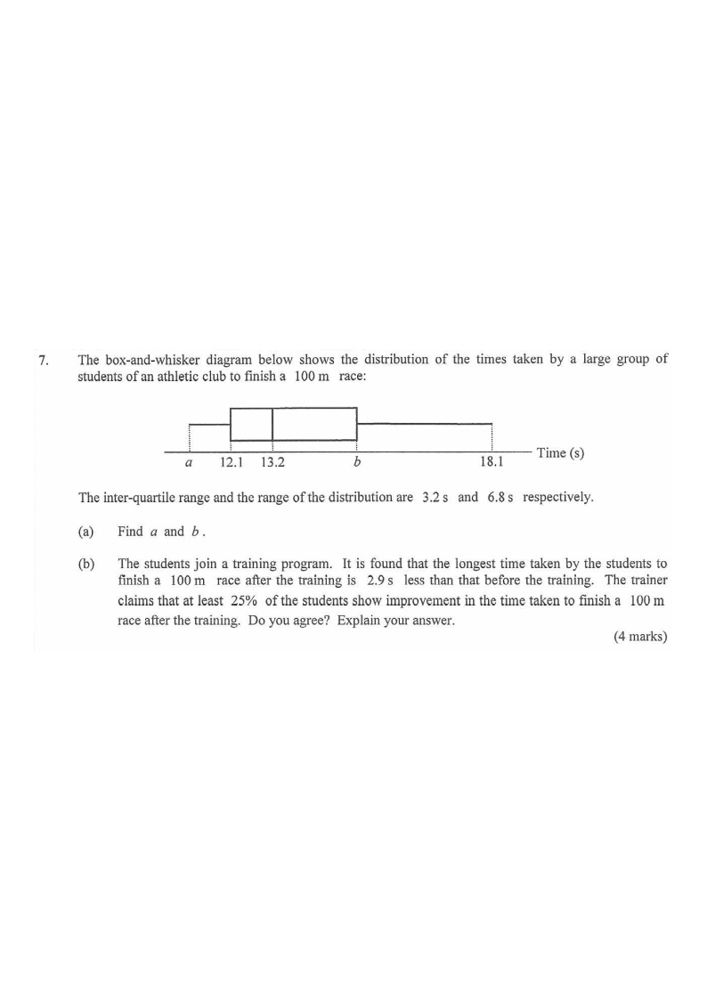

Step 1: Given lower quartile $=12.1$, median $=13.2$, upper quartile $=b$, IQR $=3.2$ s, range $=6.8$ s.
The box-and-whisker diagram below shows the distribution of the times taken by a large group of students of an athletic club to finish a 100 m race:
[figure as shown in the left pane]

The inter-quartile range and the range of the distribution are 3.2 s and 6.8 s respectively.
From the diagram: lower quartile \(Q_1 = 12.1\) s,
median \(= 13.2\) s, upper quartile \(Q_3 = b\), minimum \(= a\), maximum \(= 18.1\) s.
Read the four vertical lines of the box and the two whisker ends.
\[ \text{IQR} = Q_3 - Q_1 = b - 12.1 = 3.2 \] \[ b = 12.1 + 3.2 = 15.3 \]
The IQR is the width of the box,
i.e. from \(Q_1\) to \(Q_3\).
\[ \text{Range} = \text{max} - \text{min} = 18.1 - a = 6.8 \] \[ a = 18.1 - 6.8 = 11.3 \]
The range is from the left whisker end \(a\) to the right whisker end \(18.1\).
Before training,
the longest time was \(18.1\) s.
After training, the longest time is \(2.9\) s less:
\[ 18.1 - 2.9 = 15.2 \text{ s} \]
Compare with the upper quartile of the distribution before training, \(Q_3 = 15.3\) s.
The top 25% of the original times lie above \(Q_3 = 15.3\) s.
Since \(15.2 < 15.3\), even the longest time after training is shorter than the upper quartile \(Q_3\) of the distribution before training.
That means every student (at least the top 25%) who previously had a time above \(15.3\) s now has a time below \(15.3\) s,
so all these students have improved.
The 25% above \(Q_3\) are precisely the slowest quarter of the original group.
At least 25% of the students show improvement,
so the trainer's claim is agreed.
Compare the new maximum (15.2 s) with the original \(Q_3\) (15.3 s).
Question. A box-and-whisker diagram shows the times (in seconds) of a group of students in a \(100\) m race, with lower quartile \(22.4\), median \(25.0\) and maximum \(31.8\). The inter-quartile range is \(4.6\) and the range is \(10.2\).
(a) Find the upper quartile \(Q_{3}\) and the minimum.
(b) After training, the longest time is \(5.1\) s less than before. Does this show that at least \(25\%\) of the students improved? Explain.